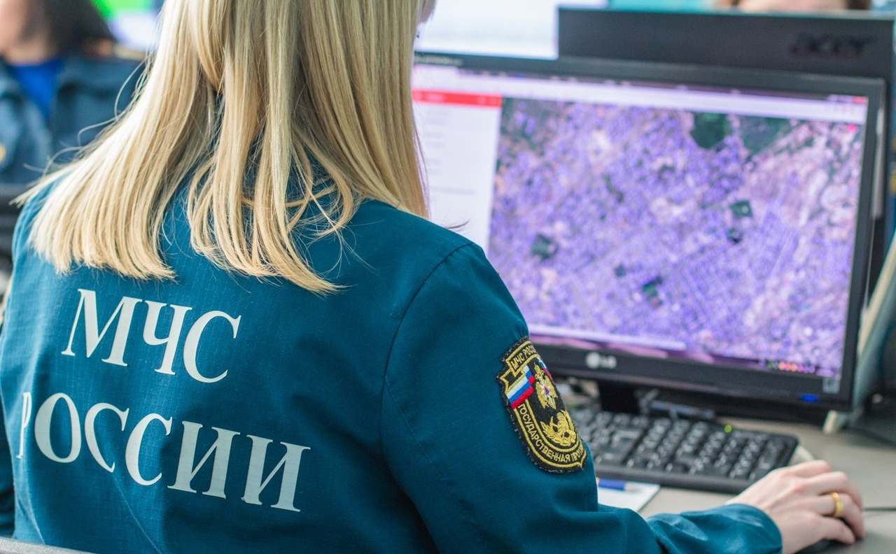

О специальности
СРОК ОБУЧЕНИЯ: На базе 9 классов (срок обучения 3 г. 10 мес.)
ФОРМЫ ОБУЧЕНИЯ: очная ЯЗЫК ОБУЧЕНИЯ: русский
КВАЛИФИКАЦИЯ: Специалист по приему и обработке экстренных вызовов
Областью профессиональной деятельности выпускников является обеспечение безопасности, обеспечение информирования экстренных оперативных и аварийно-восстановительных служб, служб жизнеобеспечения населения и единых дежурно-диспетчерских служб о происшествиях с целью предотвращения и устранения угрозы жизни, здоровью и имуществу граждан, а также правопорядку
Специалист по приему и обработке экстренных вызовов готовится к следующим видам деятельности:
- прием экстренных вызовов (сообщений о происшествиях);
- оповещение экстренных оперативных и аварийно-восстановительных служб, служб жизнеобеспечения населения и единых дежурно-диспетчерских служб о происшествии;
- оказание справочно-консультативной помощи заявителям
- оповещение экстренных оперативных и аварийно-восстановительных служб, служб жизнеобеспечения населения и единых дежурно-диспетчерских служб о происшествии Программа готовит специалистов юридического профиля в сфере обеспечения социальной защиты населения. Вы познакомитесь с основами психологии социально-правовой деятельности, научитесь организовывать работу органов социальной защиты, устанавливать и индексировать материальные выплаты в соответствии с нормативными актами.
